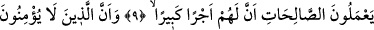
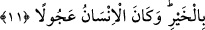

BU KUR’AN EN DOĞRU YOLA İLETİR
9. Gerçekten bu Kur’an en doğru yola iletir ve sâlih ameller işleyen mü’minlere,
kendileri için büyük bir ecir olduğunu müjdeler.
10. Âhirete inanmayanlara gelince, onlar için de elemli bir azap hazırlamışızdır.
11. İnsan hayrı istediği kadar şerri de ister. İnsan pek acelecidir.
Ey Muhammed! “Gerçekten” sana verdiğimiz “bu Kur’an” Mûsâ (a.s.)’a verdiğimiz
kitapta olduğu gibi belli bir kavme mahsus olmayıp bütün insanları “en doğru yola
iletir” yolların en müstakîmi, en doğrusu ve isâbetlisi olan İslâm’a ve tevhide ulaştırır.
“Kur’an’ın böyle bir yola hidâyeti”, kendisine sarılarak buyruklarıyla amel edenleri
dosdoğru yola ulaştırmasıdır, yoksa fiilen hidâyeti tahsil etmek değildir. Çünkü bu
mü’minlere mahsustur.
Kur’an, ihtivâ ettiği ahkam ve şer‘î esaslarla birlikte “sâlih ameller işleyen
mü’minlere,” işledikleri bu ameller karşılığında “kendileri için büyük bir ecir
olduğunu müjdeler.” Ecrin büyüklüğü, hem amellerin kendisi îtibâriyle, hem de on kat
veya daha fazla sevab verilmesi bakımındandır.
Kâşifî “onlara büyük bir ecir, yâni büyük af ve mağfiret, yâni cennet ihsan eder” der.
Çünkü dünya ve içindekiler, cennet ve nimetleri yanında çok küçük kalır.
10. Âhirete inanmayanlara gelince, onlar için de elemli bir azap hazırlamışızdır.
“Âhirete inanmayanlara” öldükten sonra dirilme (ba‘s), hesab, ceza gibi âhiretle
ilgili hükümlere inanmayanlara “gelince onlar için de elemli bir azap hazırlamışızdır.”
Yâni, âhirette var olduğuna inanmadıkları ve inkâr ettikleri hususlarda onlar için
cehennem azâbı hazırladık.
Şu halde Kur’an mü’minlere iki müjde verir: Onlara sevab verileceği, düşmanlarına
ise azâb edileceğidir. Çünkü kişi düşmanının belâya uğraması ile sevinir.